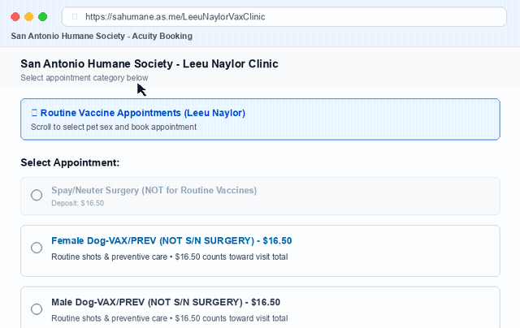

📅 After You Get Your Puppy, Do This
Follow these step-by-step dates. Do not wait for a full-year plan; focus only on what to do next.
The Day the Puppy Comes Home
Book your first vaccine visit immediately online. Appointment slots at low-cost clinics fill quickly. Check Option A below to grab a weekday slot, or pick an Option B weekend pop-up date as your backup.
First Clinic Visit (Booster + Dewormer)
Get your puppy’s initial DAPP core booster and deworming. Typical out-of-pocket cost is about $51 total (including the $16.50 online booking fee). Bring any prior paperwork or breeder records.
Booster Rounds Until ~16 Weeks Old
Puppies require sequential booster rounds of the DAPP vaccine every 3 to 4 weeks until their immune system matures around 16 weeks of age.
Final Puppy Round + First Rabies Shot
Texas state law requires a rabies shot by 16 weeks (permitted from 12 weeks). This visit costs around $50 total. You can microchip your puppy at this visit ($35) or wait until surgery day.
Heartworm & Flea Prevention (Never Skip)
San Antonio is a severe heartworm transmission region due to year-round mosquitoes. Administer prevention monthly without missing a dose. You can purchase prevention directly from the clinic once their veterinarian has examined the pup.
Spay / Neuter Surgery (100% Free with City Grant)
Surgery is completely free for owners living in qualifying San Antonio city ZIP codes through the city grant. Slots release once per month on a Monday at 9:00 AM. Book one month ahead and bring your physical proof of residency.
Adult Boosters
Final puppy transition booster. After this visit, core rabies and DA2PP shots repeat every 1 to 3 years.
💡 Puppy Age Window & Free City Events: Puppies arriving at 2 to 3 months sit between fixed age brackets; ask clinic staff to tailor the package to prior shots. Also check for City of San Antonio Animal Care Services (ACS) free vaccine clinics (held at Paul Jolly Center, Garza Park, and Monterrey Park on Saturdays in November; first-come, proof of residency required).
🐶 Small Dog Note: Vaccines are priced flat regardless of pet size. Spay/neuter surgery uses weight tiers, and a small dog (2–20 lbs) sits in the cheapest tier ($98–$104 regular, or 100% free with the city grant). Puppies must weigh at least 2 lbs and be 8+ weeks old for surgery.
💉 Two Ways to Get the Shots
Choose between the lowest overall price (appointment required) or the best walk-in option (no appointment).
Other Weekday & Backup Options in San Antonio
- Pet Vaccination Clinic: 1010 SW Military Dr • (210) 923-5721 • Mon–Fri 9:00 AM – 2:30 PM • petvacc.com
- SNAP Spay/Neuter & Wellness (Brooks): 8034 City Base Landing • (210) 673-7722 • Mon–Thu 7:15 AM – 5:00 PM • snapus.org
- Marbach Road Animal Hospital: 7508 Marbach Rd • (210) 673-8020 • Mon–Fri 8:00 AM – 5:30 PM, Sat 8:00 AM – 12:00 PM
- Vetco at Petco: 3143 SE Military Dr & 1211 Austin Hwy • Weekend affordable vaccine clinic hours
- VCA Animal Hospitals: Free initial physical exam coupon available online for new puppy owners (covers doctor exam only; shots and meds extra) • vcahospitals.com
📱 How to Book SAHS (Step-by-Step)
Follow this visual click path to secure your appointment without getting confused by surgical forms.
1 Open the official scheduling portal: sahumane.as.me/LeeuNaylorVaxClinic.
2 Scroll past the top categories to the bottom list labeled "Select Appointment".
3 Select "Female Dog-VAX/PREV (NOT S/N SURGERY)" or "Male Dog-VAX/PREV" ($16.50 fee). Do not choose a surgery option for shots.
4 Tap Book. The monthly calendar opens with available days highlighted in blue.
5 Tap an open day to view available 15-minute time slots on the right, pick your time, and complete checkout.
🎬 15-Second Booking Click Path (Animation)
Watch the exact mouse clicks from selecting the appointment service to locking in your calendar slot:

📄 Proof of Residency (For Free Surgery)
Mandatory Rules to Receive Free Spay / Neuter Grant
The City of San Antonio grant covers 100% of surgery costs for residents in qualifying city ZIP codes. To claim this grant, you must comply with strict check-in proof rules:
- Eligible Documents: A valid Texas Driver's License OR a current Utility Bill (CPS Energy electric or SAWS water bill).
- Matching Name: The name on the document must exactly match the name on the appointment booking.
- Physical Printout Required: Bring a physical, printed paper copy on surgery day at drop-off. You cannot upload it online beforehand or display it on a phone screen.
- City Boundary Check: You must live within official San Antonio city limits in an eligible ZIP code. Independent enclave cities (such as Leon Valley, Helotes, Castle Hills, Alamo Heights) do not qualify. Verify your address with the official Bexar County City Limits Checker.
🛡️ Pet Insurance Note
Does Pet Insurance Make Low-Cost Clinics Cheaper?
No. Pet insurance does not discount or lower low-cost clinic prices. Standard pet insurance policies only cover unexpected accidents and illnesses, completely excluding routine preventive care like puppy shots, deworming, and low-cost checkups.
Optional "wellness plans" sold by insurers merely reimburse an annual allowance roughly equal to what you pay in monthly fees. If you plan to get accident/illness insurance, enroll your puppy the day they come home—policies enforce a 14-day waiting period for illness and permanently exclude any condition noted on a vet record before enrollment.
🔗 Official Links & Resources
Direct links to verified city programs, scheduling portals, and pricing schedules.